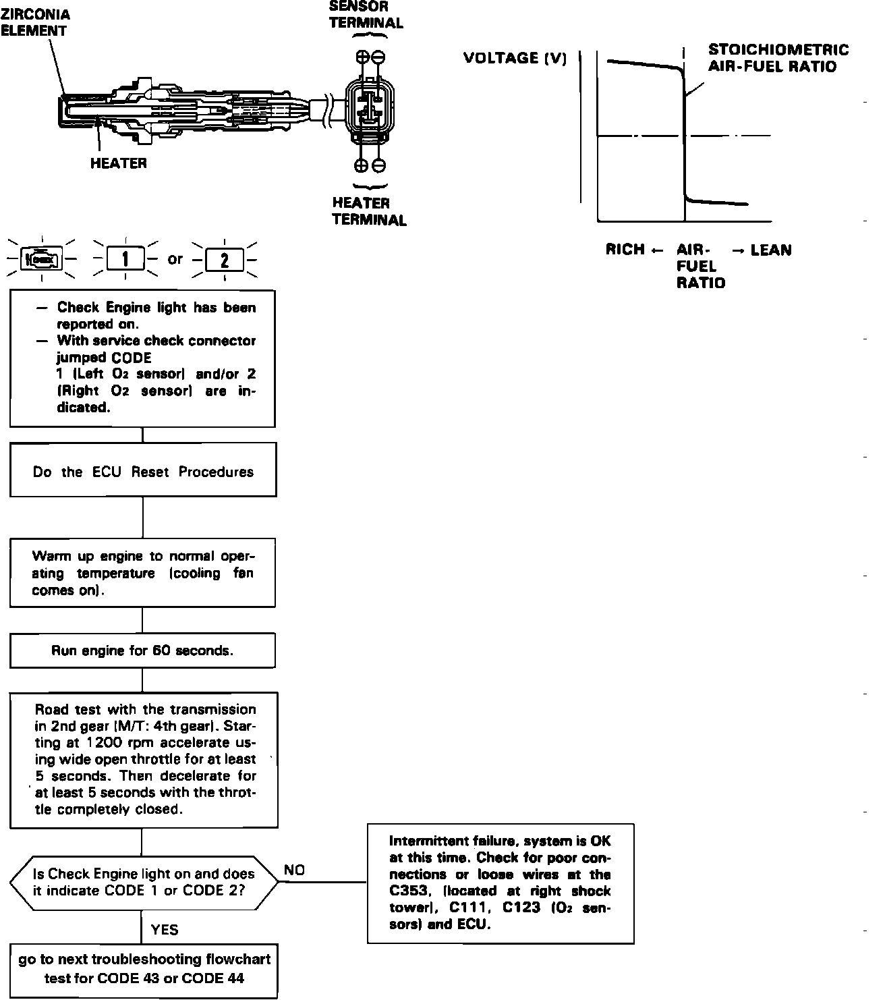
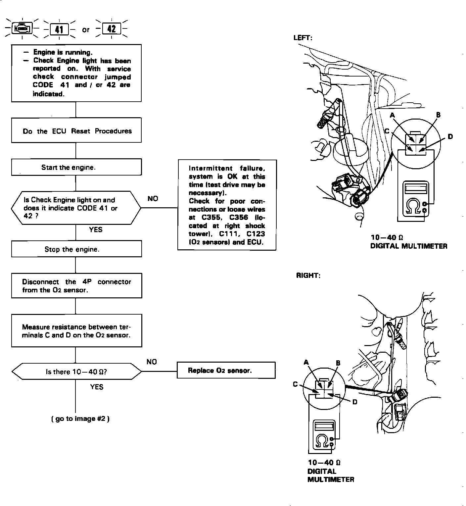
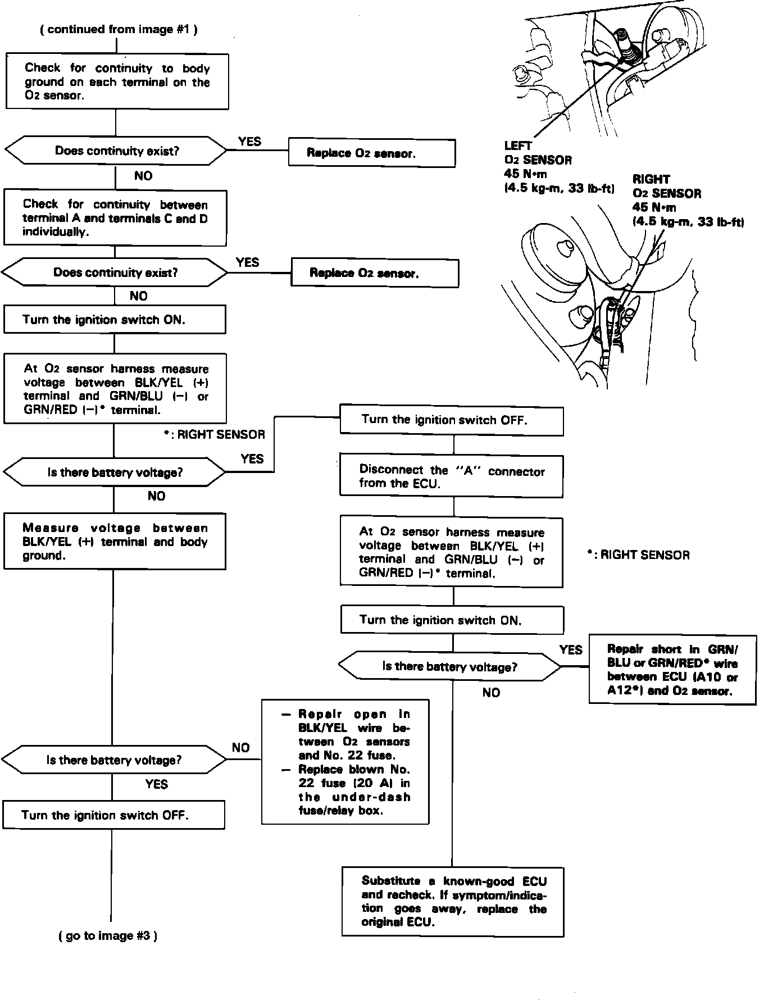
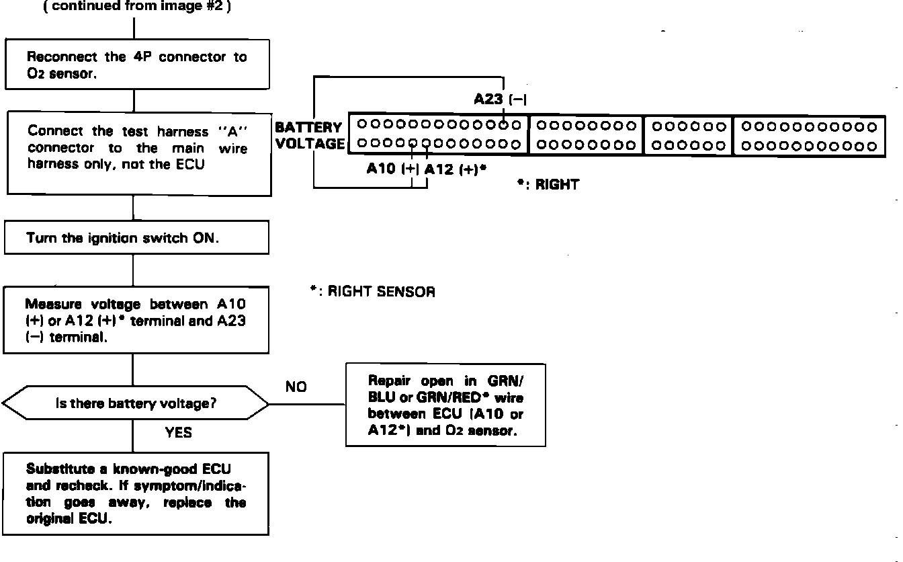
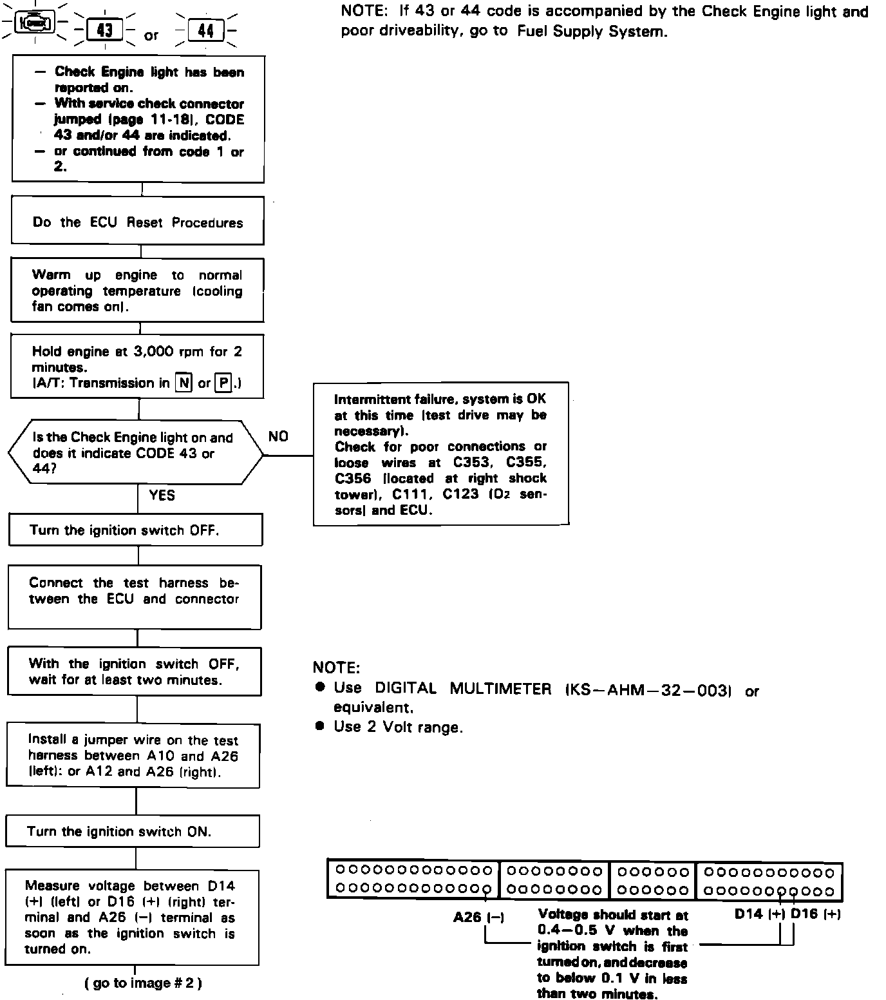
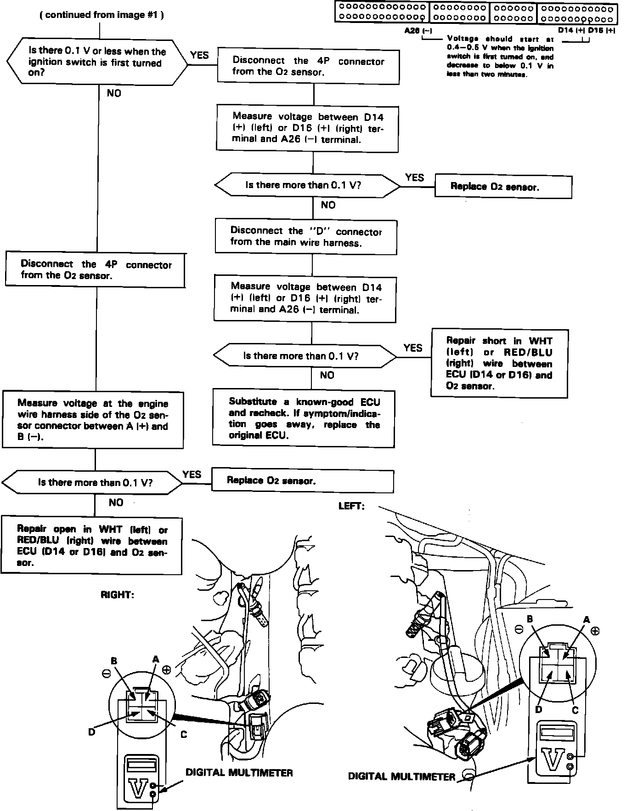

Oxygen Sensor: Testing and Inspection
Oxygen Sensor Intermittent Failure:

OXYGEN SENSOR INTERMITTENT FAILURE TESTING
1 Of 3 Oxygen Sensor Heater Testing:

1 of 3
2 Of 3 Oxygen Sensor Heater Testing:

2 of 3
3 Of 3 Oxygen Sensor Heater Testing:

3 of 3
OXYGEN SENSOR HEATER TESTING
1 Of 2 Oxygen Sensor Testing:

1 of 2
2 Of 2 Oxygen Sensor Testing:

2 of 2
OXYGEN SENSOR TESTING